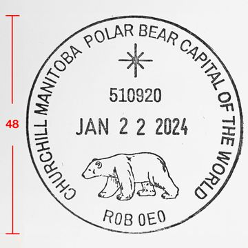
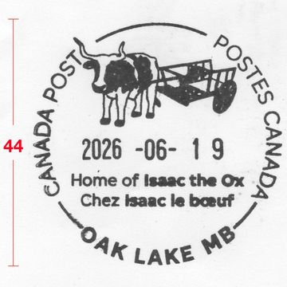
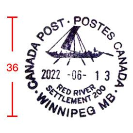
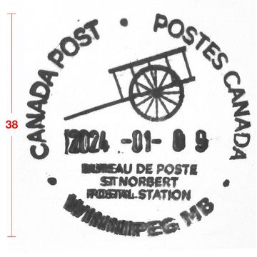

Pictorial cancels in Manitoba
We have recorded 9 pictorial cancels in this province. 8 are still in use and can be requested from the post office, in person or by mail.
In use (8)

Churchill POPOLAR BEAR CAPITAL OF THE WORLDActive · ?–present
Oak Lake POHome of Isaac the Ox / Chez Isaac le boeufActive · 2024–2036 Winnipeg C.R.O.Haunted CanadaActive · ?–present
Winnipeg C.R.O.Haunted CanadaActive · ?–present Winnipeg C.R.O.CMHRActive · ?–present
Winnipeg C.R.O.CMHRActive · ?–present
Winnipeg C.R.O.Red River SettlementActive · ?–present Winnipeg C.R.O.BridgeActive · ?–present
Winnipeg C.R.O.BridgeActive · ?–present Winnipeg C.R.O.StatueActive · 2022–present
Winnipeg C.R.O.StatueActive · 2022–present
Winnipeg St Norbert POCartActive · ?–present
Retired (1)
Other provinces and territories: Alberta · British Columbia · New Brunswick · Newfoundland and Labrador · Nova Scotia · Ontario · Prince Edward Island · Quebec · Saskatchewan · Northwest Territories · Nunavut · Yukon